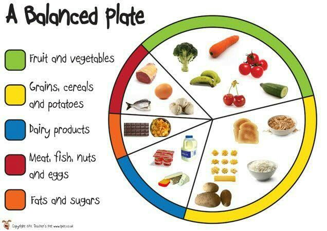

Healthy Food Importance

A healthy diet is essential for good health and nutrition. It protects you against many chronic noncommunicable diseases, such as heart disease, diabetes and cancer. Eating a variety of foods and consuming less salt, sugars and saturated and industrially-produced trans-fats, are essential for healthy diet.
Diseases are reduced when food intake is healthy and balanced. The green leafy vegetable is good for increasing body strength. ... Junk food is the opposite of healthy eating and contains too much sugar, salt, and fat. Healthy food is cheaper and affordable.Research has shown that students are able to learn better when they're well nourished, and eating healthy meals has been linked to higher grades, better memory and alertness, and faster information processing.Good nutrition plays an important role in the optimal growth, development, health and well-being of individuals in all stages of life. Healthy eating can reduce the risk of chronic diseases, such as heart disease, stroke, diabetes and some types of cancer.